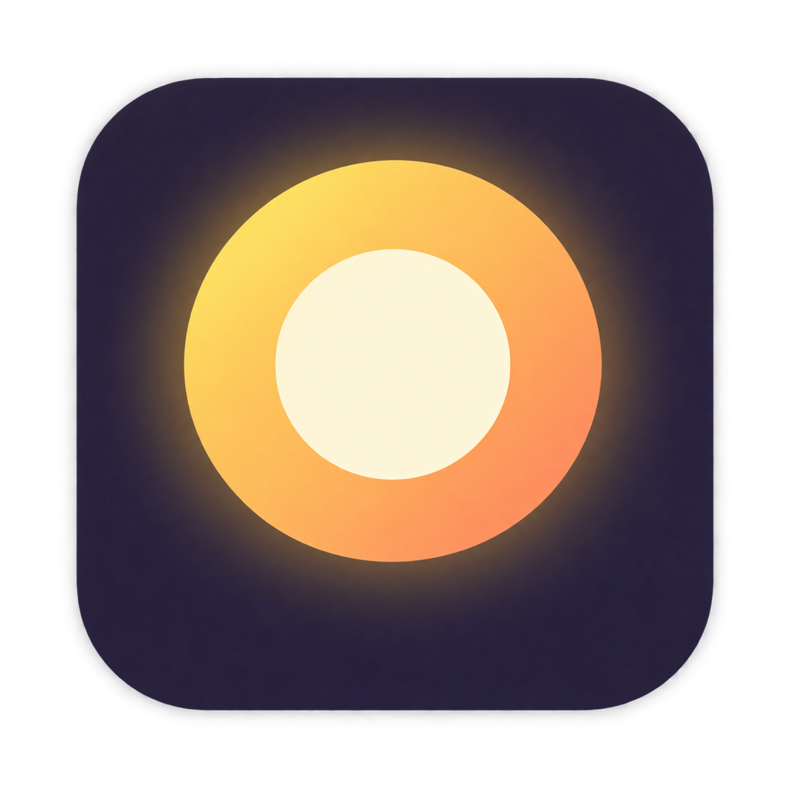

<!doctype html>
<meta charset="utf-8" />
<title>Farol stories</title>
<style>
  @font-face {
    font-family: Geist;
    src: url(../../../../design-lab/fonts/geist/Geist-Variable.woff2);
    font-weight: 100 900;
  }
  @font-face {
    font-family: GeistMono;
    src: url(../../../../design-lab/fonts/geist/GeistMono-Variable.woff2);
    font-weight: 100 900;
  }
  :root {
    --bg: #0a0e1c;
    --panel: #121829;
    --raised: #1a2238;
    --line: #2b3550;
    --text: #f2f4fb;
    --muted: #9aa6c2;
    --accent: #bba5ff;
    --accent-ink: #14102a;
    --signal: #ffc061;
    --good: #6ee7b0;
    --good-bg: #123026;
    --scan: #2a2750;
    --bubble: #2a2548;
    --key: #c9a7ff;
    --fn: #8fc2ff;
    --str: #ffc98a;
    --comment: #7a86a3;
    --mark: #ffffff;
    --dock: #1a2036;
    --desk: #0e1426;
  }
  [data-theme="light"] {
    --bg: #f4f3f9;
    --panel: #ffffff;
    --raised: #efedf6;
    --line: #d6d3e2;
    --text: #1d1b29;
    --muted: #625d75;
    --accent: #5b43b5;
    --accent-ink: #ffffff;
    --signal: #c26a00;
    --good: #16764d;
    --good-bg: #dff5ea;
    --scan: #e7e1fa;
    --bubble: #e9e4f8;
    --key: #6d3fc8;
    --fn: #1b62c0;
    --str: #a4560a;
    --comment: #77728a;
    --mark: #15131f;
    --dock: #e4e2ee;
    --desk: #ebe9f3;
  }
  * {
    box-sizing: border-box;
    margin: 0;
  }
  html,
  body {
    width: 800px;
    height: 500px;
    overflow: hidden;
    background: var(--bg);
    color: var(--text);
    font:
      13px/1.45 Geist,
      sans-serif;
    -webkit-font-smoothing: antialiased;
  }
  #stage {
    position: absolute;
    inset: 0;
  }
  .abs {
    position: absolute;
  }
  .window {
    position: absolute;
    background: var(--panel);
    border: 1px solid var(--line);
    border-radius: 12px;
    overflow: hidden;
  }
  .bar {
    height: 34px;
    display: flex;
    align-items: center;
    gap: 8px;
    padding: 0 12px;
    border-bottom: 1px solid var(--line);
    font-weight: 600;
  }
  .lights {
    display: flex;
    gap: 5px;
    margin-right: 6px;
  }
  .lights i {
    width: 9px;
    height: 9px;
    border-radius: 50%;
    background: var(--line);
  }
  .badge {
    margin-left: auto;
    font-size: 11px;
    font-weight: 500;
    padding: 2px 8px;
    border-radius: 99px;
    color: var(--accent);
    border: 1px solid var(--accent);
  }
  .bubble {
    margin-left: auto;
    max-width: 222px;
    background: var(--bubble);
    padding: 7px 11px;
    border-radius: 12px 12px 3px 12px;
    font-size: 13px;
  }
  .chip {
    display: flex;
    align-items: center;
    gap: 6px;
    font-size: 11.5px;
    color: var(--muted);
    margin-top: 6px;
  }
  .chip b {
    font-weight: 500;
    color: var(--text);
    font-family: GeistMono;
    font-size: 11px;
  }
  .chip .ok {
    color: var(--good);
    font-weight: 700;
  }
  .chip .wait {
    width: 7px;
    height: 7px;
    border-radius: 50%;
    background: var(--signal);
  }
  .answer {
    font-size: 13px;
    margin-top: 9px;
  }
  .answer code {
    font: 11.5px GeistMono;
    background: var(--raised);
    padding: 0 4px;
    border-radius: 4px;
  }
  .composer {
    position: absolute;
    left: 10px;
    right: 10px;
    bottom: 10px;
    min-height: 58px;
    background: var(--raised);
    border: 1px solid var(--line);
    border-radius: 12px;
    padding: 8px 40px 8px 11px;
    font-size: 13px;
  }
  .composer.empty {
    color: var(--muted);
  }
  .send {
    position: absolute;
    right: 8px;
    bottom: 8px;
    width: 24px;
    height: 24px;
    border-radius: 50%;
    background: var(--line);
    color: var(--panel);
    display: grid;
    place-items: center;
    font-size: 14px;
    font-weight: 700;
  }
  .send.on {
    background: var(--accent);
    color: var(--accent-ink);
  }
  .caret {
    display: inline-block;
    width: 1.5px;
    height: 1.05em;
    background: var(--text);
    vertical-align: -2px;
    margin-left: 1px;
  }
  .tree {
    position: absolute;
    left: 0;
    top: 34px;
    bottom: 0;
    width: 116px;
    padding: 9px 6px;
    border-right: 1px solid var(--line);
    font-size: 11.5px;
  }
  .tree p {
    font-size: 9px;
    letter-spacing: 0.06em;
    white-space: nowrap;
    color: var(--muted);
    margin: 0 5px 6px;
    font-weight: 600;
  }
  .tree div {
    padding: 2.5px 5px;
    border-radius: 5px;
    color: var(--muted);
    white-space: nowrap;
    display: flex;
    justify-content: space-between;
  }
  .tree div.on {
    background: var(--scan);
    color: var(--text);
  }
  .tree div em {
    font-style: normal;
    color: var(--good);
    font-weight: 700;
  }
  .editor {
    position: absolute;
    left: 116px;
    right: 0;
    top: 34px;
    bottom: 0;
  }
  .tab {
    height: 28px;
    display: flex;
    align-items: center;
    padding: 0 12px;
    border-bottom: 1px solid var(--line);
    font: 11.5px GeistMono;
    justify-content: space-between;
  }
  .tab span:last-child {
    color: var(--good);
  }
  .code {
    padding-top: 8px;
    font: 11px/19px GeistMono;
  }
  .ln {
    display: flex;
    white-space: pre;
    padding-right: 6px;
    height: 19px;
  }
  .ln i {
    font-style: normal;
    width: 30px;
    text-align: right;
    padding-right: 10px;
    color: var(--comment);
    flex: none;
  }
  .ln.scan {
    background: var(--scan);
  }
  .ln.add {
    background: var(--good-bg);
  }
  .ln.add i {
    color: var(--good);
  }
  .k {
    color: var(--key);
  }
  .f {
    color: var(--fn);
  }
  .s {
    color: var(--str);
  }
  .c {
    color: var(--comment);
  }
  .wire {
    position: absolute;
    height: 2px;
    background: var(--line);
  }
  .dot {
    position: absolute;
    border-radius: 50%;
  }
  .caption {
    position: absolute;
    left: 20px;
    right: 20px;
    bottom: 13px;
    display: flex;
    align-items: center;
    gap: 10px;
    font-weight: 600;
    font-size: 14.5px;
  }
  .caption .n {
    width: 22px;
    height: 22px;
    border-radius: 50%;
    display: grid;
    place-items: center;
    font-size: 12px;
    background: var(--accent);
    color: var(--accent-ink);
  }
  .caption .note {
    margin-left: auto;
    font-size: 10.5px;
    font-weight: 400;
    color: var(--muted);
  }
  .term {
    font: 11.5px/18.5px GeistMono;
    padding: 10px 13px;
    white-space: pre-wrap;
    word-break: break-all;
  }
  .term .p {
    color: var(--good);
  }
  .term .d {
    color: var(--muted);
  }
  .term .ok {
    color: var(--good);
    font-weight: 600;
  }
  .dockbar {
    position: absolute;
    bottom: 8px;
    left: 50%;
    transform: translateX(-50%);
    display: flex;
    align-items: flex-end;
    gap: 8px;
    padding: 5px 9px;
    background: var(--dock);
    border: 1px solid var(--line);
    border-radius: 13px;
  }
  .dockbar > i {
    width: 40px;
    height: 40px;
    border-radius: 9px;
    background: var(--raised);
    border: 1px solid var(--line);
    display: block;
  }
  .side {
    position: absolute;
    left: 0;
    top: 34px;
    bottom: 0;
    width: 132px;
    border-right: 1px solid var(--line);
    padding: 10px 8px;
    font-size: 12.5px;
    color: var(--muted);
  }
  .side div {
    padding: 4px 8px;
    border-radius: 6px;
  }
  .side div.on {
    background: var(--raised);
    color: var(--text);
    font-weight: 600;
  }
  .btn {
    display: inline-block;
    padding: 6px 13px;
    border-radius: 8px;
    background: var(--accent);
    color: var(--accent-ink);
    font-weight: 600;
    font-size: 12.5px;
  }
  .btn.press {
    background: var(--muted);
  }
  .cursor {
    position: absolute;
    width: 14px;
    height: 20px;
  }
</style>
<body>
  <div id="stage"></div>
  <script>
    const params = new URLSearchParams(location.search);
    document.documentElement.dataset.theme = params.get("theme") || "dark";
    const stage = document.getElementById("stage");
    const clamp = (v, a = 0, b = 1) => Math.min(b, Math.max(a, v));
    const seg = (t, a, b) => clamp((t - a) / (b - a));
    const ease = (x) => 1 - (1 - x) * (1 - x);
    const esc = (s) => s.replace(/&/g, "&amp;").replace(/</g, "&lt;");
    const typed = (s, t, a, b) => s.slice(0, Math.round(s.length * seg(t, a, b)));
    const blink = (t) => Math.floor(t * 2.5) % 2 === 0;

    /* Flat monochrome reinterpretation of Farol's concentric light. No bitmap, blur or opacity. */
    function mark(x, y, active, t) {
      const pulse = active ? 18 + 4 * ((t * 1.4) % 1) : 18;
      return `<svg class="abs" style="left:${x - 28}px;top:${y - 28}px" width="56" height="56" viewBox="0 0 68 68">
        <rect x="1" y="1" width="66" height="66" rx="17" fill="var(--panel)" stroke="${active ? "var(--mark)" : "var(--line)"}" stroke-width="1.5"/>
        <circle cx="34" cy="34" r="${pulse}" fill="none" stroke="var(--mark)" stroke-width="1"/>
        <circle cx="34" cy="34" r="13.5" fill="none" stroke="var(--mark)" stroke-width="4"/>
        <circle cx="34" cy="34" r="6" fill="var(--mark)"/>
      </svg>`;
    }

    /* A packet with a stepped, opaque trail; it only ever travels along the wires. */
    function packet(x, y, dir, color) {
      return [0, 1, 2]
        .map((n) => {
          const r = 5 - n * 1.5;
          const px = x - dir * n * 11;
          return `<div class="dot" style="left:${px - r}px;top:${y - r}px;width:${2 * r}px;height:${2 * r}px;background:${color}"></div>`;
        })
        .join("");
    }

    const py = (line) => {
      const k = /\b(def|return|from|import|assert)\b/g;
      if (line.startsWith('"""') || line.startsWith("#")) return `<span class="c">${esc(line)}</span>`;
      return esc(line)
        .replace(/(f?"[^"]*"?)/g, '<span class="s">$1</span>')
        .replace(k, '<span class="k">$1</span>')
        .replace(/\b(greeting|farewell|test_greeting)(?=\()/g, '<span class="f">$1</span>');
    };
    const md = (line) =>
      line.startsWith("#") ? `<span class="k">${esc(line)}</span>` : esc(line);

    const LEFT = { x: 18, w: 282 };
    const RIGHT = { x: 384, w: 398 };
    const MID = { x: 342, y: 214 };
    const TOP = 16;
    const HEIGHT = 424;

    function route(t, out, back) {
      let html = "";
      const left = LEFT.x + LEFT.w;
      const right = RIGHT.x;
      html += `<div class="wire" style="left:${left}px;width:${MID.x - 28 - left}px;top:${MID.y - 1}px"></div>`;
      html += `<div class="wire" style="left:${MID.x + 28}px;width:${right - MID.x - 28}px;top:${MID.y - 1}px"></div>`;
      const trip = (a, b, dir, color) => {
        if (t < a || t > b) return;
        const p = ease(seg(t, a, b));
        const span = right - left;
        const x = dir > 0 ? left + span * p : right - span * p;
        if (Math.abs(x - MID.x) < 28) return;
        html += packet(x, MID.y, dir, color);
      };
      out.forEach(([a, b]) => trip(a, b, 1, "var(--signal)"));
      back.forEach(([a, b]) => trip(a, b, -1, "var(--good)"));
      return html;
    }

    function chat(t, prompt, typeA, typeB, sendAt, body) {
      const sent = t >= sendAt;
      let composer;
      if (sent) composer = `<div class="composer empty">Ask anything<div class="send">↑</div></div>`;
      else if (t < typeA)
        composer = `<div class="composer empty">Ask anything<div class="send">↑</div></div>`;
      else
        composer = `<div class="composer">${esc(typed(prompt, t, typeA, typeB))}${blink(t) ? '<span class="caret"></span>' : ""}<div class="send ${t >= typeB ? "on" : ""}">↑</div></div>`;
      return `<div class="window" style="left:${LEFT.x}px;top:${TOP}px;width:${LEFT.w}px;height:${HEIGHT}px">
        <div class="bar">ChatGPT<span class="badge">Farol on</span></div>
        <div class="abs" style="left:12px;right:12px;top:46px">
          ${sent ? `<div style="display:flex"><div class="bubble">${esc(prompt)}</div></div>` : ""}
          ${body}
        </div>
        ${composer}
      </div>`;
    }
    const chip = (text, state) =>
      `<div class="chip">${state === "ok" ? '<span class="ok">✓</span>' : '<span class="wait"></span>'}<b>${text}</b></div>`;
    const answer = (html, t, a, b) => {
      const plain = html.replace(/<[^>]+>/g, "");
      const n = Math.round(plain.length * seg(t, a, b));
      let seen = 0,
        out = "",
        inTag = false;
      for (const ch of html) {
        if (seen >= n) break;
        if (ch === "<") inTag = true;
        if (inTag) {
          out += ch;
          if (ch === ">") inTag = false;
          continue;
        }
        out += ch;
        seen++;
      }
      return `<div class="answer">${out}</div>`;
    };
    function mac(grant, files, active, tabName, stat, lines) {
      const tree = files
        .map(
          (f) =>
            `<div class="${f.name === active ? "on" : ""}">${f.name}${f.isNew ? "<em>+</em>" : ""}</div>`,
        )
        .join("");
      const code = lines
        .map(
          (l, i) =>
            `<div class="ln ${l.cls || ""}"><i>${l.cls === "add" ? "+" : i + 1}</i><span>${l.html}</span></div>`,
        )
        .join("");
      return `<div class="window" style="left:${RIGHT.x}px;top:${TOP}px;width:${RIGHT.w}px;height:${HEIGHT}px">
        <div class="bar"><span class="lights"><i></i><i></i><i></i></span>my-project<span class="badge">${grant}</span></div>
        <div class="tree"><p>APPROVED FOLDER</p>${tree}</div>
        <div class="editor"><div class="tab"><span>${tabName}</span><span>${stat || ""}</span></div><div class="code">${code}</div></div>
      </div>`;
    }
    const caption = (n, text) =>
      `<div class="caption"><span class="n">${n}</span>${text}<span class="note">Illustration · synthetic data</span></div>`;

    /* Story 1: ask a question, read the project, answer with sources. */
    function read(t) {
      const prompt = "Read my project and explain how it works.";
      const readme = ["# my-project", "A small greeting library.", "", "## Usage", "from greeting import greeting", 'greeting("Ada")'];
      const source = ['"""Friendly messages."""', "", "def greeting(name):", '    return f"Hello, {name}!"'];
      const onSource = t >= 8.4;
      const reading = t >= 6 && t < 11;
      const src = onSource ? source : readme;
      const fmt = onSource ? py : md;
      const a = onSource ? 8.4 : 6;
      const b = onSource ? 10.8 : 8.2;
      const lit = t >= a && t < b ? Math.floor(src.length * seg(t, a, b)) : -1;
      const lines = src.map((l, i) => ({ html: fmt(l), cls: reading && i === lit ? "scan" : "" }));
      let body = "";
      if (t >= 4.2 && t < 6) body += chip("Asking Farol…");
      if (t >= 6) body += chip("Read README.md", t >= 8.2 ? "ok" : "");
      if (t >= 8.4) body += chip("Read greeting.py", t >= 10.8 ? "ok" : "");
      if (t >= 12.4)
        body += answer(
          "A small greeting library. <code>greeting(name)</code> in <code>greeting.py</code> returns the message, and <code>README.md</code> shows how to call it.",
          t,
          12.4,
          16,
        );
      const step = t < 4 ? 1 : t < 6 ? 2 : t < 11 ? 3 : 4;
      const text = [
        "",
        "You ask in ChatGPT",
        "The request reaches your Mac",
        "Farol reads only the folder you approved",
        "The answer comes back with its sources",
      ][step];
      const active = (t >= 4.2 && t < 11.8);
      stage.innerHTML =
        chat(t, prompt, 0.5, 3.4, 4, body) +
        route(t, [[4.2, 6]], [[11, 12.4]]) +
        mark(MID.x, MID.y, active, t) +
        `<div class="abs" style="left:${MID.x - 40}px;width:80px;top:${MID.y + 33}px;text-align:center;font-weight:600">Farol</div>` +
        mac("Read only", [{ name: "README.md" }, { name: "greeting.py" }, { name: "notes.md" }], t < 6 ? "" : onSource ? "greeting.py" : "README.md", onSource ? "greeting.py" : "README.md", "", lines) +
        caption(step, text);
    }

    /* Story 2: request a change; code is added to one file and a test file is created. */
    function edit(t) {
      const prompt = "Add a greeting(name) function and a test for it.";
      const base = ['"""Friendly messages."""', "", "def farewell(name):", '    return f"Bye, {name}."'];
      const added = ["", "def greeting(name):", '    return f"Hello, {name}!"'];
      const test = ["from greeting import greeting", "", "def test_greeting():", '    assert "Ada" in greeting("Ada")'];
      const files = [{ name: "README.md" }, { name: "greeting.py" }];
      if (t >= 12.2) files.push({ name: "test_greeting.py", isNew: true });
      const typeLines = (src, a, b) => {
        const total = src.join("\n").length;
        let left = Math.round(total * seg(t, a, b));
        return src.map((l) => {
          const part = l.slice(0, Math.max(0, left));
          left -= l.length + 1;
          return part;
        });
      };
      let lines, tab, stat;
      if (t < 12.2) {
        lines = base.map((l, i) => ({
          html: py(l),
          cls: t >= 6 && t < 7.6 && i === Math.floor(base.length * seg(t, 6, 7.6)) ? "scan" : "",
        }));
        typeLines(added, 8, 11.8)
          .slice(0, t >= 8 ? 3 : 0)
          .forEach((l) => lines.push({ html: py(l), cls: "add" }));
        tab = "greeting.py";
        stat = t >= 8 ? "+3 −0" : "";
      } else {
        lines = typeLines(test, 12.4, 15.6).map((l) => ({ html: py(l), cls: "add" }));
        tab = "test_greeting.py";
        stat = "new file · +4";
      }
      let body = "";
      if (t >= 4.2 && t < 6) body += chip("Asking Farol…");
      if (t >= 6) body += chip("Read greeting.py", t >= 7.6 ? "ok" : "");
      if (t >= 8) body += chip("Edit greeting.py", t >= 11.8 ? "ok" : "");
      if (t >= 12.2) body += chip("Create test_greeting.py", t >= 15.6 ? "ok" : "");
      if (t >= 17.2)
        body += answer(
          "Done. I added <code>greeting(name)</code> and a test in <code>test_greeting.py</code>. Review the diff in your editor.",
          t,
          17.2,
          20,
        );
      const step = t < 4 ? 1 : t < 7.8 ? 2 : t < 12.2 ? 3 : t < 16 ? 4 : 5;
      const text = [
        "",
        "You ask for a change",
        "Farol reads the code first",
        "New code lands in your file",
        "It can create new files too",
        "You review the result",
      ][step];
      const active = t >= 4.2 && t < 16.4;
      stage.innerHTML =
        chat(t, prompt, 0.5, 3.4, 4, body) +
        route(t, [[4.2, 6]], [[16, 17.2]]) +
        mark(MID.x, MID.y, active, t) +
        `<div class="abs" style="left:${MID.x - 40}px;width:80px;top:${MID.y + 33}px;text-align:center;font-weight:600">Farol</div>` +
        mac("Read &amp; write", files, t < 6 ? "" : tab, tab, stat, lines) +
        caption(step, text);
    }

    /* Story 3: paste the command, verify, Dock bounce, the app opens on Setup. */
    function install(t) {
      const cmd = "curl -fsSL https://raw.githubusercontent.com/legrch/farol/main/scripts/install-release.sh | sh -s -- latest";
      const v = "0.5.18";
      let out = `<span class="p">❯</span> ${typed(cmd, t, 0.5, 2.2)}`;
      if (t < 2.5 && blink(t)) out += '<span class="caret"></span>';
      const add = (at, text, cls = "") => {
        if (t >= at) out += `\n<span class="${cls}">${text}</span>`;
      };
      add(2.8, "Finding the newest published stable release...", "d");
      add(3.3, `Selected Farol ${v}`, "d");
      add(3.6, `Downloading Farol-${v}-darwin-arm64.zip...`, "d");
      if (t >= 3.8) {
        const p = seg(t, 3.8, 6.4);
        const hashes = Math.round(p * 44);
        out += `\n<span class="d">${"#".repeat(hashes)}${" ".repeat(44 - hashes)} ${(p * 100).toFixed(1)}%</span>`;
      }
      add(6.5, "Downloading farol-release.json...", "d");
      add(6.8, "Downloading SHA256SUMS...", "d");
      add(7.1, "Verifying the release...", "d");
      add(8, "Outer app: unsigned; executable signatures and release tree verified (Electron has no resource seal)", "d");
      add(11.2, `Installed and running: Farol ${v}`, "ok");
      add(11.5, "Farol opened. Check its connection and updates in the app.", "ok");
      const open = ease(seg(t, 12.6, 13.2));
      const started = t >= 15.4;
      // Dock icon appears, then three decaying bounces while the app launches.
      const appear = ease(seg(t, 8.6, 9));
      let bounce = 0;
      if (t >= 9 && t < 11.6) {
        const phase = ((t - 9) / 2.6) * 3;
        const k = Math.floor(phase);
        bounce = Math.sin((phase - k) * Math.PI) * [34, 24, 14][k];
      }
      const size = 40 * appear;
      const dock = `<div class="dockbar"><i></i><i></i><i></i><i></i>${
        appear > 0
          ? ``
          : ""
      }</div>`;
      const scale = 0.92 + 0.08 * open;
      const appWindow =
        open > 0
          ? `<div class="window" style="left:60px;top:18px;width:680px;height:352px;transform:scale(${scale});visibility:${open > 0.05 ? "visible" : "hidden"}">
            <div class="bar"><span class="lights"><i></i><i></i><i></i></span>Setup<span style="font-weight:400;color:var(--muted)">/ ${started ? "Sign in" : "Overview"}</span></div>
            <div class="side"><div>Home</div><div>ChatGPT</div><div>Activity</div><div class="on">Setup</div></div>
            <div class="abs" style="left:164px;top:62px;right:32px">${
              started
                ? `<div style="font-size:22px;font-weight:700;margin-bottom:6px">Sign in to ChatGPT</div>
                   <div style="color:var(--muted);margin-bottom:14px">Use your own ChatGPT account. Farol checks sign-in before you continue.</div>
                   <span class="btn">Sign in</span>`
                : `<div style="font-size:22px;font-weight:700;margin-bottom:6px">Connect Farol to ChatGPT</div>
                   <div style="color:var(--muted);margin-bottom:14px">Sign in, choose a folder, connect this Mac and add Farol to ChatGPT.</div>
                   <span class="btn ${t >= 15 ? "press" : ""}">Start setup</span>`
            }</div>
          </div>`
          : "";
      const cx = 60 + 164 + 40;
      const cy = 18 + 62 + 78;
      const moving = seg(t, 13.6, 14.8);
      const curX = 610 + (cx - 610) * ease(moving);
      const curY = 330 + (cy - 330) * ease(moving);
      const cursor =
        open >= 1
          ? `<svg class="cursor" style="left:${started ? cx + 30 : curX}px;top:${started ? cy + 40 : curY}px" viewBox="0 0 14 20"><path d="M1 1v15l4-3.6 2.6 6 2.6-1.1-2.6-6H13z" fill="var(--text)" stroke="var(--bg)" stroke-width="1.2"/></svg>`
          : "";
      const step = t < 2.8 ? 1 : t < 8.6 ? 2 : t < 12.6 ? 3 : 4;
      const text = ["", "Paste one command in Terminal", "It downloads and verifies the release", "Farol appears in your Dock", "Setup opens: follow the steps below"][step];
      stage.innerHTML = `<div class="abs" style="left:0;top:0;right:0;bottom:44px;background:var(--desk);border-bottom:1px solid var(--line)">
          <div class="window" style="left:60px;top:18px;width:680px;height:352px">
            <div class="bar"><span class="lights"><i></i><i></i><i></i></span>Terminal</div>
            <div class="term">${out}</div>
          </div>
          ${appWindow}
          ${dock}
          ${cursor}
        </div>` + caption(step, text);
    }

    const scenes = {
      read: { draw: read, seconds: 20 },
      edit: { draw: edit, seconds: 24 },
      install: { draw: install, seconds: 20 },
    };
    window.scenes = Object.fromEntries(Object.entries(scenes).map(([k, v]) => [k, v.seconds]));
    window.draw = (name, t) => scenes[name].draw(t);
    if (params.get("scene")) draw(params.get("scene"), Number(params.get("t") || 0));
  </script>
</body>
